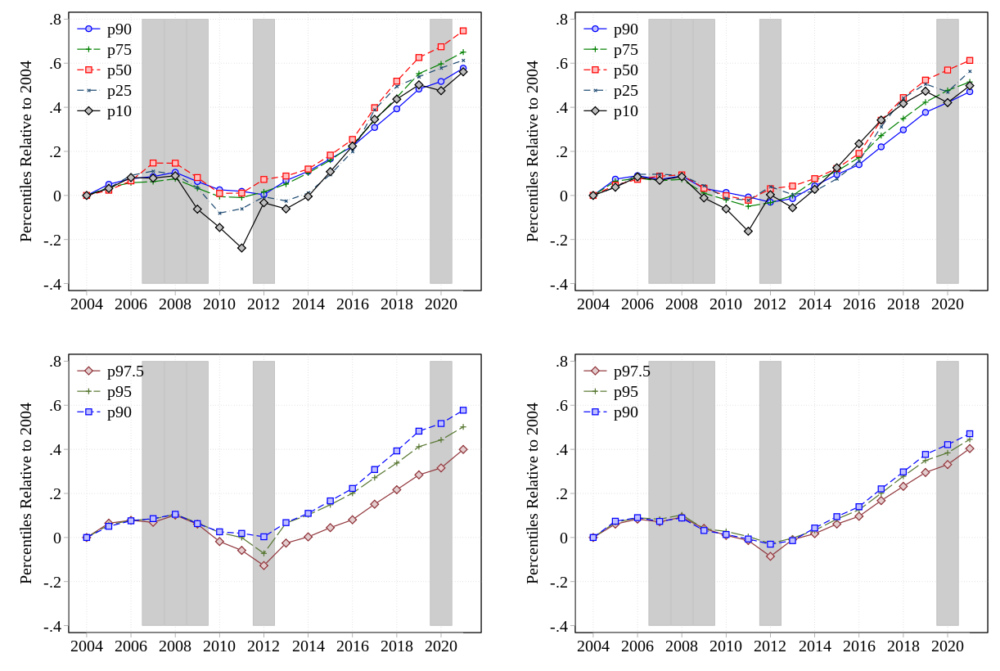
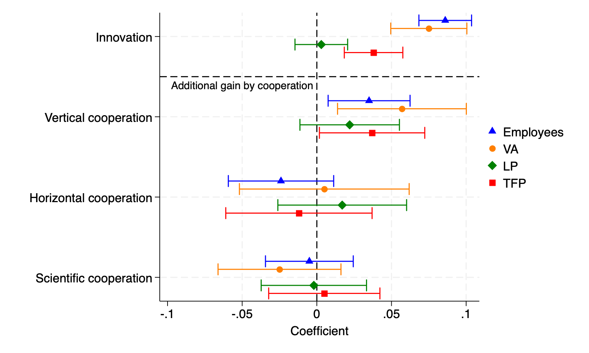

Martin Neubrandt
PhD Candidate in Economics
Corvinus University of Budapest
neubrandt.martin@krtk.elte.hu
I am a PhD candidate in economics at Corvinus University of Budapest, and a Junior Research Fellow at the ELTE Centre for Economic and Regional Studies. I am an applied economist focusing on productivity. I primarily use firm- and worker-level microdata to uncover the factors that drive productivity differences.
Published Papers
Two Decades of Earnings Inequality in Hungary [link]
with István Boza and Rita Pető. Journal of Macroeconomics, 89 (2026), 103779.

Change in real earnings percentiles relative to 2004, by gender
We use Hungarian administrative microdata harmonized within the Global Repository of Income Dynamics (GRID) framework to study earnings inequality, volatility, and mobility over 2004–2021. Aggregate earnings dispersion changes little over the two decades, with modest increases in top inequality for men and widening lower-tail inequality among young workers. One-year earnings growth shows asymmetric downside risk during recessions, especially for men, and persistently higher volatility, skewness, and kurtosis for prime-age women, consistent with career interruptions around childbearing. In the second part of the paper, we estimate AKM-style wage models with occupation effects for 2004–2010 and 2013–2019. Worker heterogeneity explains about half of wage dispersion in both periods. The role of firm and occupation premia declines, consistent with the strong increase in real minimum wages. Meanwhile, the contribution of worker–firm sorting remains quantitatively important, especially in the bias-corrected specification. Bias-corrected results suggest a strong role of assortativity in the Hungarian labor market.
Upcoming / Under Review
Partnering for Productivity: The Impact of Cooperation on Firm Performance [link]
Under review.

Employment and performance effects by cooperation type
This paper examines how cooperation with different partners in innovation activities shapes firm employment and performance. Using panel data from the Hungarian Community Innovation Survey linked to administrative firm-level financial data, I show that vertical cooperation increases the gain from innovation. Following an innovation, firms that engage in vertical cooperation in their innovation activity are associated with 3.5% higher employment, 5.7% higher value added, and 3.7% higher total factor productivity, on top of the estimated effect of innovation itself. Cooperation with other partner types has no significant direct effect on employment or performance.
Working Papers
- The effect of retirement on productivity and wages
- Shock-driven diversification of supply chains with Gábor Békés, Márta Bisztray, Miklós Koren, Balázs Lengyel
- Inflation and Well-Being Among Older Adults in Europe with Anikó Bíró